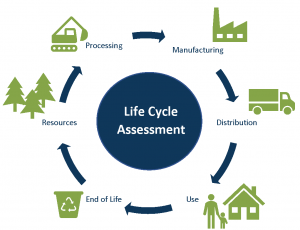

Paper
The (average) paper life cycle
- Creation
- Recycaling I
- Recycaling II
- Recycaling III
- Recycaling IV
- Recycaling V
- Recycaling VI
- Recycaling VII (Sometimes)
- Reused
- Creation
- Recycaling I
- Recycaling II
- Recycaling III
- Recycaling IV
- Recycaling V
- Recycaling VI
- Recycaling VII (Sometimes)
- Reused
The creation:
Paper comes from trees, so to begin the prosses a tree must be cut down and the raw wood turned into pulp. There are many different ways to make pulp usually involving wood fibers and chemicals being mixed together and then processed mechanically which involves the wood being grinded to pulp leading to weaker fibers and therefore weaker paper or chemically which is the more common method. The paper produced first is higher quality and the rest of the paper afterwards becomes worse and worse quality.
The pulp then had the water within separated by filtering with wired mesh, the process is called screening and is carried out with machines.
The pulp is flattened by heated rollers that squeeze out the remaining water and form huge rolls of paper. The paper is then cut and sold.
Recycling
When the paper is collected the paper is sorted in different categories according to their grade. The paper is then cleaned and turned back into pulp.
After the process has been completed 6 or 7 times the paper's cellulose fibers have been degraded to the point they cannot form new paper.
This paper is then sorted and turned into pulp to aid other papers in their forming process as the original used paper is not able to hold its own form, this helps new paper have a better color, quality, and less impurities.
Cycle
This new paper relives the cycle.
